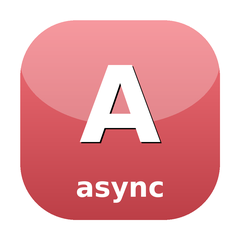

Shared async vocabulary for ReactPHP
Shared async vocabulary unifying ReactPHP usage across the SugarCraft monorepo. CancellationToken (owner/source pattern), Subscription interface, Subscriptions::compose() for atomic disposal, and AsyncOps static helpers for common async patterns.
composer require sugarcraft/candy-asyncuse SugarCraft\Async\{AsyncOps, CancellationSource};
$source = CancellationSource::new();
// Attach a cancellation callback
$source->token()->onCancel(fn() => echo "Cancelled!\n");
$source->cancel(); // prints "Cancelled!"
// Timeout wrapper
$loop = \React\EventLoop\Loop::get();
$promise = AsyncOps::withTimeout($loop, $somePromise, 5.0);
// Retry with backoff
$promise = AsyncOps::retry(
fn() => $httpClient->request('GET', 'https://example.com'),
attempts: 3,
baseBackoffSeconds: 0.5,
);| Class | Method | Description |
|---|---|---|
| CancellationSource | new(): self | Factory: create a new source with its own token |
| CancellationSource | token(): CancellationToken | Returns the read-only token for this source |
| CancellationSource | cancel(): void | Request cancellation. Idempotent. |
| CancellationSource | isCancelled(): bool | Returns true if cancel() has been called |
| CancellationToken | isCancelled(): bool | Returns true if the source has been cancelled |
| CancellationToken | onCancel(callable): void | Register a callback; fires immediately if already cancelled |
| Subscriptions | compose(Subscription ...): self | Combine multiple subscriptions into one atomic handle |
| Subscriptions | unsubscribe(): void | Dispose all underlying subscriptions |
| Subscriptions | isActive(): bool | Returns false after unsubscribe() |
| AsyncOps | withTimeout(LoopInterface, PromiseInterface, float): PromiseInterface | Wrap a promise with a timeout; rejects with TimeoutException |
| AsyncOps | retry(callable, int, float, ?CancellationToken): PromiseInterface | Retry with exponential backoff; respects cancellation |
| AsyncOps | debounce(callable, float, ?LoopInterface): callable | Debounce wrapper; only last call fires after window |
| AsyncOps | throttle(callable, float, ?LoopInterface): callable | Throttle wrapper; fires at most once per interval |